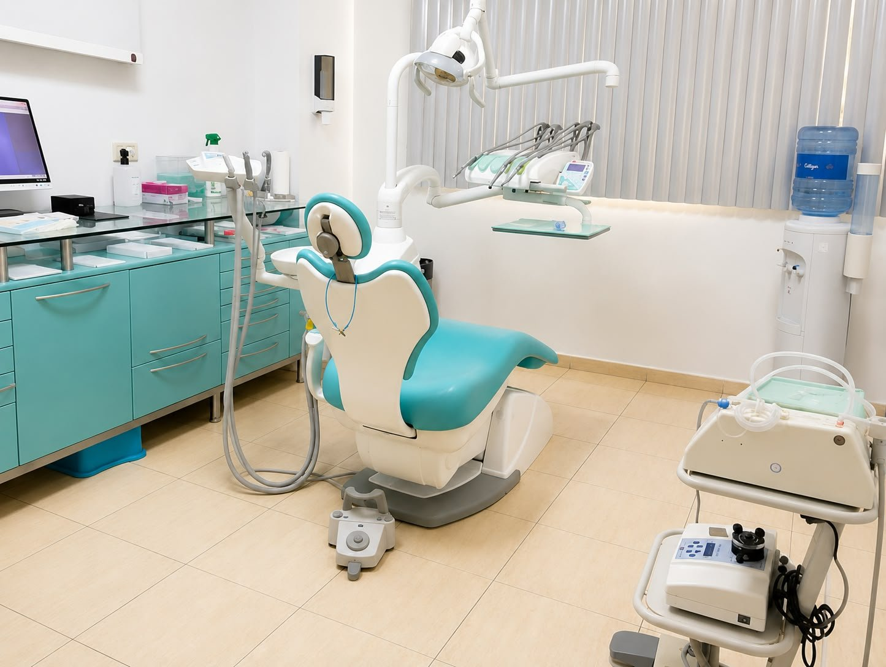
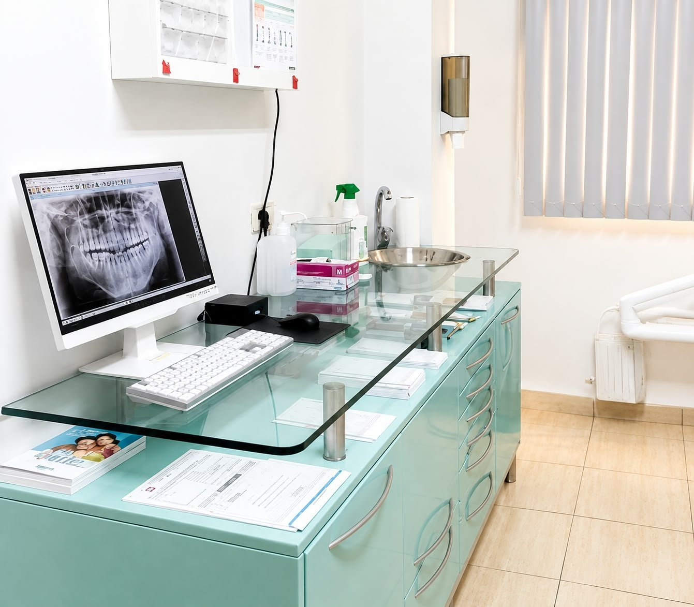
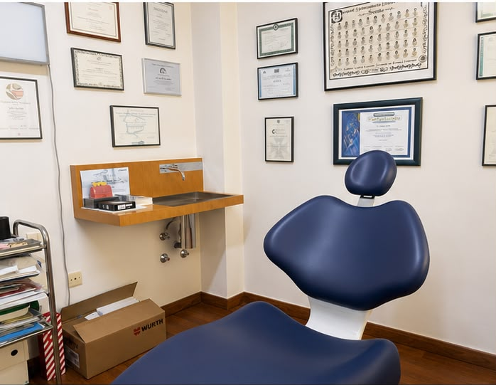

Odontología general
Prevención, revisiones y tratamientos conservadores para mantener tu boca sana.
Ver informaciónEstas son algunas de las áreas de atención de la clínica. La indicación concreta depende del diagnóstico y de las circunstancias de cada paciente.
Prevención, revisiones y tratamientos conservadores para mantener tu boca sana.
Ver informaciónValoración y abordaje quirúrgico de problemas de la boca, los maxilares y estructuras relacionadas.
Ver informaciónSoluciones para reponer dientes ausentes y recuperar función, estabilidad y confianza al sonreír.
Ver informaciónTratamiento del interior del diente cuando la pulpa está inflamada o infectada.
Ver informaciónCuidado de encías y tejidos de soporte frente a sangrado, inflamación o movilidad.
Ver informaciónCoronas, puentes y soluciones restauradoras para recuperar dientes dañados o perdidos.
Ver informaciónOpciones para mejorar color, forma y armonía de la sonrisa desde un enfoque responsable.
Ver informaciónCorrección de la posición dental y de la mordida con la opción indicada para cada caso.
Ver informaciónValoración de sobrecarga, desgaste dental y molestias relacionadas con la articulación mandibular.
Ver informaciónTratamiento para aclarar el tono de los dientes tras comprobar que dientes y encías están sanos.
Ver informaciónRestauraciones soportadas por implantes para recuperar una o varias piezas.
Ver informaciónTratamiento ortodóncico con aparatología fija para alinear dientes y mejorar la mordida.
Ver informaciónCuando existen varias necesidades, ordenamos el tratamiento según salud, urgencia, función y objetivos personales. Te explicamos por qué se propone cada paso.
Gabinetes, diagnóstico por imagen y zonas de trabajo forman parte de la atención en Clínica Scherba.


